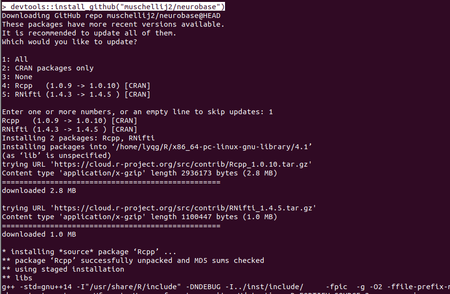
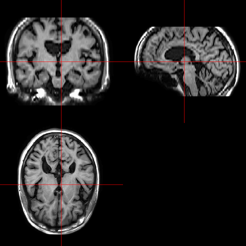
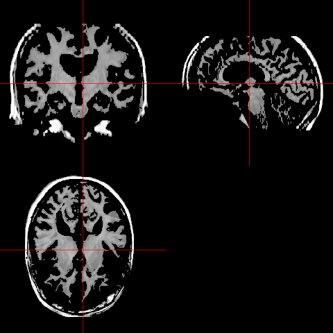

Importing
- First thing I would like to do and also strongly recommend you to do is to setup a working directory. For example, I created a directory “STAT818” on my Desktop. I also created a sub-directory “data” in the “STAT818” folder and put all my STAT818 datasets in it (you can downloaded from Canvas). Every time I am working on a STAT818 homework or project, I setup my working directory to be “STAT818” using the syntax:
> setwd("/Desktop/STAT818/")
- To check where is your current working directory, you can use the syntax:
> getwd()
[1] "/Desktop/STAT818/"
Importing from files
- Data input using
read.table().
> turtles = read.table("./data/PaintedTurtles.txt", header = TRUE) # Note that my working directory is the STAT818 folder. You will need to provide the full path of the "PaintedTurtles.txt" file otherwise.
> turtles[1:4, ]
sex length width height
1 f 98 81 38
2 f 103 84 38
3 f 103 86 42
4 f 105 86 40
- Data input using
read.csv().
> diabetes <- read.csv("diabetes.csv")
> diabetes[1:4, ]
id relwt glufast glutest steady insulin group
1 1 0.81 80 356 124 55 3
2 3 0.94 105 319 143 105 3
3 5 1.00 90 323 240 143 3
4 7 0.91 100 350 221 119 3
### csv files always contain a header line. Usually, don't need to specify "header = TRUE". However, if you specify "header = FALSE", then read.csv() will create a header line and treat the actual header line as the 1st row of data body!
> diabetes <- read.csv("diabetes.csv", header=FALSE)
> diabetes[1:4, ]
V1 V2 V3 V4 V5 V6 V7
1 id relwt glufast glutest steady insulin group
2 1 0.81 80 356 124 55 3
3 3 0.94 105 319 143 105 3
4 5 1.0 90 323 240 143 3
- Data input using
openxlsx().
The function openxlsx() is from R package openxlsx. First, install the openxlsx package by
> install.packages('openxlsx')
Or install it from “Install Packages” in your RStudio. We will talk about install R packages in a later section.
There are other R packages that can be used for reading and writing .xlsx files. For example, "readxl" and "xlsx". They all follow similar syntax lines as provided here.
|
|
- Reading data from a file using
scan()
Functions like “read.table()” and “read.csv()” are superb for reading in dataframes with a fixed number of rows and colums (i.e. matrix look-alike datasets). For irregular or non-standard shaped data, “scan()” and “readlines()” can be used.
|
|
-
Build-in datasets
R contains several built-in datasets that can be loaded. Others datasets are available in packages that can be downloaded from CRAN.
[1]
data()displays a list of all datasets currently available and can be used to load R built-in datasets.[2]
data(package="NAME")will load data from an R package.[3]
attach()attaches a data frame into global environment. After this attach() function is executed. The columns can be directly indexed instead of using both data frame name and the column name.
> data()
Data sets in package ‘datasets’:
AirPassengers Monthly Airline Passenger Numbers 1949-1960
BJsales Sales Data with Leading Indicator
BJsales.lead (BJsales)
Sales Data with Leading Indicator
BOD Biochemical Oxygen Demand
CO2 Carbon Dioxide Uptake in Grass Plants
ChickWeight Weight versus age of chicks on different diets
DNase Elisa assay of DNase
EuStockMarkets Daily Closing Prices of Major European Stock
...
:
### Press "q" to exist the printout.
> data(mtcars)
> mtcars[1:5, 1:5]
mpg cyl disp hp drat
Mazda RX4 21.0 6 160 110 3.90
Mazda RX4 Wag 21.0 6 160 110 3.90
Datsun 710 22.8 4 108 93 3.85
Hornet 4 Drive 21.4 6 258 110 3.08
Hornet Sportabout 18.7 8 360 175 3.15
> cyl
Error: object 'cyl' not found
> cyl
[1] 6 6 4 6 8 6 8 4 4 6 6 8 8 8 8 8 8 4 4 4 4 8 8 8 8 4 4 4 8 6 8 4
> detach(mtcars)
> data(chredlin)
Warning message:
In data(chredlin) : data set ‘chredlin’ not found
> data(chredlin, package = "faraway")
> tail(chredlin, n=3) ## last 3 rows
race fire theft age involact income side
60627 47.4 7.0 3 11.4 0.2 10.080 s
60633 34.0 7.1 23 49.2 0.3 11.428 s
60645 3.1 4.9 27 46.6 0.0 13.731 n
- Load data from an R image ‘.rdata’ file.
> load("./data/Msig3transp.RData")
Msig3transp[1:5, 1:6]
X3968 X14831 X13492 X5108 X16348
HEA26_EFFE_1 -2.6108361 -1.1857923 -0.05612926 -0.1470299 0.5230758
HEA26_MEM_1 -2.2592865 -0.4718562 0.27730991 0.5438521 -0.3659554
HEA26_NAI_1 -0.2719081 0.8170308 0.81269167 0.7198425 -0.9049818
MEL36_EFFE_1 -2.2431022 -1.0806009 -0.23557156 -0.1760595 0.6406782
MEL36_MEM_1 -2.6798807 -0.1463671 0.24909402 0.9519808 -0.2040837
X585
HEA26_EFFE_1 -0.01816524
HEA26_MEM_1 0.10784211
HEA26_NAI_1 0.74819063
MEL36_EFFE_1 0.01000666
MEL36_MEM_1 0.16530245
###Msig3transp.RData is about gene expression data of T-cell populations from different subjects (Holmes et al. 2005). Each column corresponds to a gene and each row corresponds to a cell.
Importing from online repositories.
Publicaly accessible online databases and repositories have become more and more popular. It is usually much more convenient to import data directly from online repositories than to download them manually and then read in them using functions like “read.table()” or “read.csv()”.
Here is my favorate example: “UCSCXenaTools” – an R package for Accessing Genomics Data from UCSC Xena platform, from Cancer Multi-omics to Single-cell RNA-seq. Details of this package can be found here. The following R Scodes how to download breast cancer clinical data from TCGA Hub (https://tcga.xenahubs.net/). TCGA stands for The Cancer Genome Altas. It is a landmark cancer genomics program initiated by National Cancer Institute and National Human Genome Research Institute. It hubs multi-omics and clinical data for over 20,000 primary cancer and matched normal samples for 33 cancer types.
In order to download the data successfully, please make sure your computer is linked to the Internet.
> install.packages("UCSCXenaTools") # Or install it from RStudio: Tools -> Install Packages
> install.packages("data.table")
> library(UCSCXenaTools)
#> =========================================================================================
#> UCSCXenaTools version 1.4.8
#> Project URL: https://github.com/ropensci/UCSCXenaTools
#> Usages: https://cran.r-project.org/web/packages/UCSCXenaTools/vignettes/USCSXenaTools.html
#>
#> If you use it in published research, please cite:
#> Wang et al., (2019). The UCSCXenaTools R package: a toolkit for accessing genomics data
#> from UCSC Xena platform, from cancer multi-omics to single-cell RNA-seq.
#> Journal of Open Source Software, 4(40), 1627, https://doi.org/10.21105/joss.01627
#> =========================================================================================
#> --Enjoy it--
> data(XenaData)
> head(XenaData)
#> # A tibble: 6 × 17
#> XenaHosts XenaHostNames XenaCohorts XenaDatasets SampleCount DataSubtype Label
#> <chr> <chr> <chr> <chr> <int> <chr> <chr>
#> 1 https://… publicHub Breast Can… ucsfNeve_pu… 51 gene expre… Neve…
#> 2 https://… publicHub Breast Can… ucsfNeve_pu… 57 phenotype Phen…
#> 3 https://… publicHub Glioma (Ko… kotliarov20… 194 copy number Kotl…
#> 4 https://… publicHub Glioma (Ko… kotliarov20… 194 phenotype Phen…
#> 5 https://… publicHub Lung Cance… weir2007_pu… 383 copy number CGH
#> 6 https://… publicHub Lung Cance… weir2007_pu… 383 phenotype Phen…
#> # … with 10 more variables: Type <chr>, AnatomicalOrigin <chr>,
#> # SampleType <chr>, Tags <chr>, ProbeMap <chr>, LongTitle <chr>,
#> # Citation <chr>, Version <chr>, Unit <chr>, Platform <chr>
> paraCohort = "TCGA Breast Cancer"
> paraDatasets ="BRCA_clinicalMatrix"
> Clin_TCGA = XenaGenerate(subset = XenaHostNames =="tcgaHub") %>%
XenaFilter(filterCohorts = paraCohort) %>%
XenaFilter(filterDatasets = paraDatasets)
XenaQuery(Clin_TCGA) %>%
XenaDownload(destdir = "./")
> library(data.table)
> Clin_TCGA_BRCA = fread("TCGA.BRCA.sampleMap/BRCA_clinicalMatrix")
> dim(Clin_TCGA_BRCA)
[1] 1247 194
Clin_TCGA_BRCA[10:20, c(1,8:15)]
sampleID ER_Status_nature2012 Gender_nature2012
1: TCGA-A1-A0SD-01 Positive FEMALE
2: TCGA-A1-A0SE-01 Positive FEMALE
3: TCGA-A1-A0SF-01 Positive FEMALE
4: TCGA-A1-A0SG-01 Positive FEMALE
5: TCGA-A1-A0SH-01 Negative FEMALE
6: TCGA-A1-A0SI-01 Positive FEMALE
7: TCGA-A1-A0SJ-01 Positive FEMALE
8: TCGA-A1-A0SK-01 Negative FEMALE
9: TCGA-A1-A0SM-01 Positive MALE
10: TCGA-A1-A0SN-01 Positive FEMALE
11: TCGA-A1-A0SO-01 Negative FEMALE
HER2_Final_Status_nature2012 Integrated_Clusters_no_exp__nature2012
1: Negative NA
2: Negative NA
3: Negative NA
4: Negative NA
5: Negative 1
6: Negative NA
7: Negative 1
8: Negative 2
9: Positive NA
10: Positive NA
11: Negative 2
Integrated_Clusters_unsup_exp__nature2012
1: NA
2: NA
3: NA
4: NA
5: 1
6: NA
7: 3
8: 2
9: NA
10: NA
11: 2
Integrated_Clusters_with_PAM50__nature2012 Metastasis_Coded_nature2012
1: NA Negative
2: NA Negative
3: NA Negative
4: NA Negative
5: 1 Negative
6: NA Negative
7: 3 Negative
8: 2 Negative
9: NA Negative
10: NA Negative
11: 2 Negative
Metastasis_nature2012
1: M0
2: M0
3: M0
4: M0
5: M0
6: M0
7: M0
8: M0
9: M0
10: M0
11: M0
Importing neuroimaging data
Many R packages can be used to deal with (neuro)imaging data. Here, we use neurobase as an example to show how to import neuroimaging data into R for analysis. The neurobase package needs to be installed from devtools.
> if (!"devtools" %in% installed.packages()[, "Package"]) {
install.packages("devtools")
}
> devtools::install_github("muschellij2/neurobase")
Select to updata 1: All when the installation asks which packages would you like to update:

> library(neurobase)
> t1 = neurobase::readnii("./data/training01_01_t1.nii.gz")
> dim(t1)
[1] 408 512 152
Please notice that the neuroimaging data is read into R as a 3-dimensional array.
> ortho2(robust_window(t1, probs = c(0, 0.975)))

Exporting
- Write data using
write.table().
> write.table(Clin_TCGA_BRCA[1:50,], file="Clin_TCGA_BRCA_first100.txt", quote=FALSE, col.names=TRUE, row.names=TRUE, sep="\t")
For meanings for the options “quote=”, “col.names=”, “row.names=”, “sep=”, and other options, please see here.
- Write data using
write.csv().
> write.csv(Clin_TCGA_BRCA[1:50,], file="Clin_TCGA_BRCA_first100.csv")
For details about options of “write.csv()” function, please see here.
- Write neuroimaging data using
neurobasepackage.
> t2 <- t1 # Copy t1 to t2
> t2[which(t1<300, arr.ind=TRUE)] <- 0 # Did some thresholding on t2
> ortho2(robust_window(t2, probs = c(0, 0.975))) # Visulize the thresholded imaging
> write_nifti(t2, "./data/thresholded_brainimage.nii.gz") # Write the thresholded image using "write_nifti" function

Management
You should be able to do some simple data management using the methods we talked about in the first three weeks. Here are two examples.
- Extract the sub-dataset from “Clin_TCGA_BRCA” data with “ER_Status_nature2012” being “Positive”.
> length(which(Clin_TCGA_BRCA$ER_Status_nature2012=="Positive"))
[1] 601
> Clin_TCGA_BRCA_ER_positive <- Clin_TCGA_BRCA[which(Clin_TCGA_BRCA$ER_Status_nature2012=="Positive"),]
> dim(Clin_TCGA_BRCA_ER_positive)
[1] 601 194
- Deleting subjects in “Clin_TCGA_BRCA” data with non-missing (non-empty) values in “ER_Status_nature2012”.
> length(which(is.na(Clin_TCGA_BRCA$ER_Status_nature2012)))
[1] 0
> length(which(Clin_TCGA_BRCA$ER_Status_nature2012==""))
[1] 465
> Clin_TCGA_BRCA_ER_nonEmpty <- Clin_TCGA_BRCA[which(Clin_TCGA_BRCA$ER_Status_nature2012!=""),]